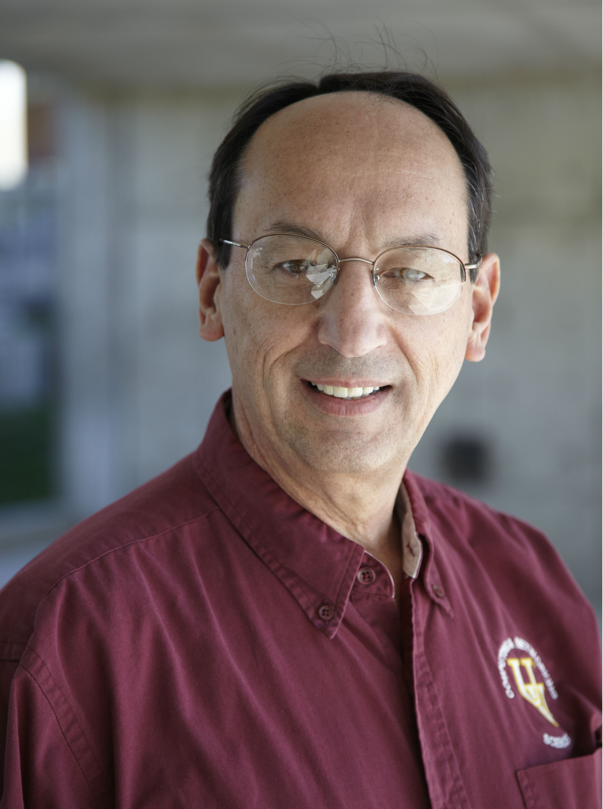

Walter Bright
 |
Walter Bright is the creator and first implementer of the D programming language and has implemented compilers for several other languages. He's an expert in all areas of compiler technology, including front ends, optimizers, code generation, interpreter engines and runtime libraries. Walter regularly writes articles about compilers and programming, is known for engaging and informative presentations, and provides training in compiler development techniques. Many are surprised to discover that Walter is also the creator of the wargame Empire, which is still popular today over 30 years after its debut. |
Andrei Alexandrescu
 |
Andrei Alexandrescu coined the colloquial term "modern C++" (adapted from his award-winning book Modern C++ Design), used today to describe a collection of important C++ styles and idioms. He is also the coauthor (with Herb Sutter) of C++ Coding Standards and the author of The D Programming Language book. With Walter Bright, Andrei co-designed many important features of D and authored a large part of D's standard library. His research on Machine Learning and Natural Language Processing completes a broad spectrum of expertise. Andrei holds a Ph.D. in Computer Science from the University of Washington and a B.Sc. in Electrical Engineering from University "Politehnica" Bucharest. He works as a Research Scientist for Facebook. |
Daniel Murphy
 |
Daniel is a Computer Engineer from Sydney, Australia. His notable projects in the D community include DDMD, magicport and ylink. He has been a regular contributor to DMD since 2011 under the name "yebblies". His interests include compilers, digital hardware, and embedded systems. |
Brian Schott
 |
Brian Schott has been using D since 2007. He wrote and maintains several tools for the development of D software. Brian currently works at Economic Modeling Specialists International where he helps maintain economic data processing and forecasting software written in D. |
Liran Zvibel
 |
Liran Zvibel is the Co-founder and CTO of Weka.IO, a stealth-mode storage startup. Prior to that he was the Co-Founder and VP R&D of Fusic, a video processing mobile/web based startup. Prior to that Liran was at XIV Storage (acquired by IBM in 2007) doing several architectural and leadership roles. Prior to that Liran served 6 years at the IDF, technologically leading a project that was awarded the most prestigious Israeli Defense Award, reaching a rank of Captain. Liran received his B.Sc. in Mathematics and Computer Sciences from the Tel Aviv University at the age of 18. |
David Nadlinger
 |
When David is not working on Quantum Computing at ETH Zurich, he is an avid advocate of open source software with a particular interest in compilers and languages. David is a member of the D core team and one of the main authors and former maintainer of LDC. Among other things, he ported LDC to MinGW, implemented Linux shared library support for it, and started work on ARM support. David is also a committer to mingw-w64, KDE, SWIG and several other projects. |
Amaury Sechet
 |
Amaury Sechet is a software engineer at Facebook and the main developer of SDC. |
Chuck Allison
|  | Chuck Allison was an early member of the ISO C++ Standards committee (1991–2001) and designed and provided the reference implementation for std::bitset. He was a columnist and editor for the C/C++ Users Journal (1992–2003), and wrote two books on C++: C & C++ Code Capsules (1998) and Thinking in C++, Volume 2, with Bruce Eckel (2004), both published by Prentice-Hall. After twenty years of developing software he returned in 2001 to his first professional love, teaching. He is a professor and chair of computer science at Utah Valley University in Orem, Utah. He has published over 100 articles and in his spare time gives training on C++, Python, D and software development principles. Except when he is playing his classical guitar or bicycling the backroads of central Utah, that is. He was an early adopter of D and has never missed a DConf. |
Martin Nowak
 |
Starting off as electrical engineering student, Martin became a C++ developer working on DSP and application code at Ableton. Following 1.5 years of full-time open source he is now working as backend engineer at Mobisol. Martin is one of the main contributors to the D runtime and was recently named release manager for the D reference compiler and standard library. You can find his GitHub profile here. |
Mihails "Dicebot" Strasuns
 |
One of the software developers working for Sociomantic Labs, one of the biggest commercial D users. For the last 6 months I have been primarily responsible for designing and operating the transition process from D1 to D2. Occasional contributor to the D toolchain and an Arch Linux Trusted User. |
Andy Smith
| Andy is a quantitative developer specialising in financial analytics + real-time trading systems. He has over 18 years experience in the banking + hedge fund industries, both in London and New York. Prior roles include UBS, Deutsche-Bank, GSA Capital, Nomura and Goldman-Sachs. |
Jonathan M. Davis
 |
Jonathan M Davis is the primary author of std.datetime and one of Phobos' core contributors. He is a professional developer and has experience in a number of programming languages, including C++, Haskell, Java, and D. For better or worse, he's well known in the D community for answering questions and being long-winded. He currently resides in California. |
Mark Isaacson
 |
Mark Isaacson is a Software Engineer at Facebook, where he recently open sourced a project in the D programming language: an ODBC driver for Presto, a distributed interactive SQL query engine that scales upwards of petabytes. Mark is the author of a tech blog "Modern Maintainable Code" that aims to open a dialogue regarding what maintainable code really looks like, to teach techniques for effective code design, and to challenge existing practices when they fall short. |
Adam Ruppe
|
Adam D. Ruppe is a master programmer and serious contender - if not winner - for world champion of D for seven consecutive years and counting. He is among the most prolific D programmers on the planet, having written all manner of code in it from bare metal programs to professional web projects, and is also the author of the critically praised and community renowned "D Cookbook".
With expert level knowledge in several programming languages, techniques, and domains coupled with versatile practicality and humble generosity, Adam rarely finds a problem he cannot solve and is a common sight in the D community, always willing—and able—to help on nearly any user question.
|
Joseph Wakeling
 |
Joseph is a software developer at Sociomantic Labs, Berlin. Prior to this he worked as an academic researcher in various fields of complex systems, including neural networks, economic simulation, and reputation and recommender systems. In his spare time he has been known to blow down wooden tubes in an attempt to create aurally pleasing effects for the entertainment of others. |
John Colvin
 |
I am a PhD student (Physics, University of Warwick, UK) doing research centred around the development of data analysis techniques and software for Tokamak research (i.e. saving the world with fusion power!). As my language of choice I use D for everything I can, from small utility scripts to professional web development with vibe.d to distributed heterogeneous computations creating terabytes of data per minute. |
Atila Neves
 |
Atila Neves has a PhD in Particle Physics for research done at CERN. Most of the research required programming in C++ and he had a major participation in the coding of the NA60’s experiment’s data acquisition and decoding software in C and C++. He later joined the Computer Security Team at CERN in the IT department and spent two years there writing Perl.
He now works at Cisco writing networking software and tools in a variety of languages, having used D for some of those tools. |
Erich Gubler
 |
Erich Gubler is an undergraduate student, graduating this Fall with a Bachelor's Degree of Computer Science at Utah Valley University. The most relevant of his programming projects include the implementation of an academic compiler toolchain using D under the guidance of UVU faculty. |